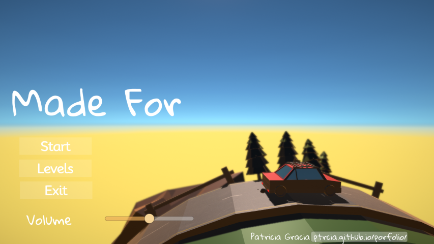

Made For
Año
2023
Técnica
Unity y Blender
Descripción
Made for es un pequeño juego que trata sobre la rutina, la soledad, la tristeza y la vida. Sobre todo quiero contar que, a pesar de todo, la vida tiene momentos impagables.
Made for is a little game that talks about routine, loneliness, sadness and life. Above all I want to convey that, despite all that, life has priceless moments.
